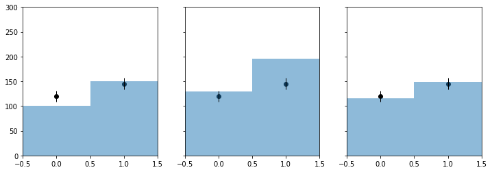
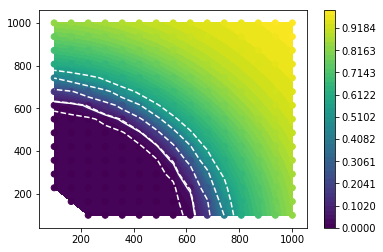

Multi-bin Poisson¶
In [1]:
%pylab inline
Populating the interactive namespace from numpy and matplotlib
In [2]:
import logging
import json
import pyhf
from pyhf import Model, optimizer
from pyhf.simplemodels import hepdata_like
from scipy.interpolate import griddata
import papermill as pm
/home/mcf/anaconda3/envs/pyhf/lib/python3.6/site-packages/nbconvert/exporters/exporter_locator.py:28: DeprecationWarning: `nbconvert.exporters.exporter_locator` is deprecated in favor of `nbconvert.exporters.base` since nbconvert 5.0.
DeprecationWarning)
/home/mcf/anaconda3/envs/pyhf/lib/python3.6/site-packages/nbconvert/preprocessors/regexremove.py:41: DeprecationWarning: Traits should be given as instances, not types (for example, `Int()`, not `Int`). Passing types is deprecated in traitlets 4.1.
patterns = List(Unicode, default_value=[r'\Z']).tag(config=True)
/home/mcf/anaconda3/envs/pyhf/lib/python3.6/site-packages/traitlets/traitlets.py:2367: DeprecationWarning: Traits should be given as instances, not types (for example, `Int()`, not `Int`). Passing types is deprecated in traitlets 4.1.
super(Set, self).__init__(trait, default_value, minlen, maxlen, **kwargs)
In [3]:
def plot_results(testmus, cls_obs, cls_exp, test_size = 0.05):
plt.plot(mutests,cls_obs, c = 'k')
for i,c in zip(range(5),['grey','grey','grey','grey','grey']):
plt.plot(mutests, cls_exp[i], c = c)
plt.plot(testmus,[test_size]*len(testmus), c = 'r')
plt.ylim(0,1)
def invert_interval(testmus, cls_obs, cls_exp, test_size = 0.05):
point05cross = {'exp':[],'obs':None}
for cls_exp_sigma in cls_exp:
yvals = cls_exp_sigma
point05cross['exp'].append(np.interp(test_size,
list(reversed(yvals)),
list(reversed(testmus))))
yvals = cls_obs
point05cross['obs'] = np.interp(test_size,
list(reversed(yvals)),
list(reversed(testmus)))
return point05cross
def plot_histo(ax, binning, data):
bin_width = (binning[2]-binning[1])/binning[0]
bin_leftedges = np.linspace(binning[1],binning[2],binning[0]+1)[:-1]
bin_centers = [le + bin_width/2. for le in bin_leftedges]
ax.bar(bin_centers,data,1, alpha=0.5)
def plot_data(ax, binning, data):
errors = [math.sqrt(d) for d in data]
bin_width = (binning[2]-binning[1])/binning[0]
bin_leftedges = np.linspace(binning[1],binning[2],binning[0]+1)[:-1]
bin_centers = [le + bin_width/2. for le in bin_leftedges]
ax.bar(bin_centers,data,0, yerr=errors, linewidth=0, error_kw = dict(ecolor='k', elinewidth = 1))
ax.scatter(bin_centers, data, c = 'k')
In [4]:
validation_datadir = '../../validation/data'
In [5]:
source = json.load(open(validation_datadir + '/1bin_example1.json'))
pdf = hepdata_like(source['bindata']['sig'], source['bindata']['bkg'], source['bindata']['bkgerr'])
data = source['bindata']['data'] + pdf.config.auxdata
init_pars = pdf.config.suggested_init()
par_bounds = pdf.config.suggested_bounds()
mutests = np.linspace(0, 5, 41)
tests = [pyhf.utils.runOnePoint(muTest, data, pdf, init_pars,par_bounds)[-2:] for muTest in mutests]
cls_obs = np.array([test[0] for test in tests]).flatten()
cls_exp = [np.array([test[1][i] for test in tests]).flatten() for i in range(5)]
plot_results(mutests, cls_obs, cls_exp)
invert_interval(mutests, cls_obs, cls_exp)
/home/mcf/anaconda3/envs/pyhf/lib/python3.6/site-packages/pyhf-0.0.8-py3.6.egg/pyhf/tensor/numpy_backend.py:71: RuntimeWarning: divide by zero encountered in log
/home/mcf/anaconda3/envs/pyhf/lib/python3.6/site-packages/pyhf-0.0.8-py3.6.egg/pyhf/tensor/numpy_backend.py:96: RuntimeWarning: divide by zero encountered in log
Out[5]:
{'exp': [1.0810606960109348,
1.4517180209455995,
2.02007552587336,
2.8348634309998424,
3.8487568097057934],
'obs': 2.3800254475466334}

In [6]:
source = {
"binning": [2,-0.5,1.5],
"bindata": {
"data": [120.0, 145.0],
"bkg": [100.0, 150.0],
"bkgerr": [15.0, 20.0],
"sig": [30.0, 45.0]
}
}
my_observed_counts = source['bindata']['data']
pdf = hepdata_like(source['bindata']['sig'], source['bindata']['bkg'], source['bindata']['bkgerr'])
data = my_observed_counts + pdf.config.auxdata
binning = source['binning']
nompars = pdf.config.suggested_init()
bonlypars = [x for x in nompars]
bonlypars[pdf.config.poi_index] = 0.0
nom_bonly = pdf.expected_data(bonlypars, include_auxdata = False)
nom_sb = pdf.expected_data(nompars, include_auxdata = False)
init_pars = pdf.config.suggested_init()
par_bounds = pdf.config.suggested_bounds()
print(init_pars)
bestfit_pars = optimizer.unconstrained_bestfit(pyhf.utils.loglambdav, data, pdf, init_pars, par_bounds)
bestfit_cts = pdf.expected_data(bestfit_pars, include_auxdata = False)
[1.0, 1.0, 1.0]
/home/mcf/anaconda3/envs/pyhf/lib/python3.6/site-packages/pyhf-0.0.8-py3.6.egg/pyhf/tensor/numpy_backend.py:71: RuntimeWarning: divide by zero encountered in log
/home/mcf/anaconda3/envs/pyhf/lib/python3.6/site-packages/pyhf-0.0.8-py3.6.egg/pyhf/tensor/numpy_backend.py:96: RuntimeWarning: divide by zero encountered in log
In [7]:
f, axarr = plt.subplots(1,3,sharey=True)
f.set_size_inches(12,4)
plot_histo(axarr[0], binning, nom_bonly)
plot_data(axarr[0], binning, my_observed_counts)
axarr[0].set_xlim(binning[1:])
plot_histo(axarr[1], binning, nom_sb)
plot_data(axarr[1], binning, my_observed_counts)
axarr[1].set_xlim(binning[1:])
plot_histo(axarr[2], binning, bestfit_cts)
plot_data(axarr[2], binning, my_observed_counts)
axarr[2].set_xlim(binning[1:])
plt.ylim(0,300);

In [8]:
##
## DUMMY 2D thing
##
def signal(m1, m2):
massscale = 150.
minmass = 100.
countscale = 2000
effective_mass = np.sqrt(m1**2 + m2**2)
return [countscale*np.exp(-(effective_mass-minmass)/massscale), 0]
def CLs(m1,m2):
signal_counts = signal(m1, m2)
pdf = hepdata_like(signal_counts, source['bindata']['bkg'], source['bindata']['bkgerr'])
try:
cls_obs, cls_exp = pyhf.utils.runOnePoint(1.0, data, pdf, init_pars,par_bounds)[-2:]
return cls_obs, cls_exp, True
except AssertionError:
print('fit failed for mass points ({}, {})'.format(m1, m2))
return None, None, False
In [9]:
nx, ny = 15, 15
grid = grid_x, grid_y = np.mgrid[100:1000:complex(0, nx), 100:1000:complex(0, ny)]
X = grid.T.reshape(nx * ny, 2)
results = [CLs(m1, m2) for m1, m2 in X]
/home/mcf/anaconda3/envs/pyhf/lib/python3.6/site-packages/pyhf-0.0.8-py3.6.egg/pyhf/tensor/numpy_backend.py:71: RuntimeWarning: divide by zero encountered in log
/home/mcf/anaconda3/envs/pyhf/lib/python3.6/site-packages/scipy/optimize/slsqp.py:63: RuntimeWarning: invalid value encountered in subtract
jac[i] = (func(*((x0+dx,)+args)) - f0)/epsilon
fun: nan
jac: array([nan, nan, nan])
message: 'Iteration limit exceeded'
nfev: 1505
nit: 101
njev: 101
status: 9
success: False
x: array([nan, nan, nan])
fit failed for mass points (100.0, 100.0)
fun: nan
jac: array([nan, nan, nan])
message: 'Iteration limit exceeded'
nfev: 1505
nit: 101
njev: 101
status: 9
success: False
x: array([nan, nan, nan])
/home/mcf/anaconda3/envs/pyhf/lib/python3.6/site-packages/pyhf-0.0.8-py3.6.egg/pyhf/tensor/numpy_backend.py:96: RuntimeWarning: divide by zero encountered in log
/home/mcf/anaconda3/envs/pyhf/lib/python3.6/site-packages/pyhf-0.0.8-py3.6.egg/pyhf/__init__.py:351: RuntimeWarning: divide by zero encountered in true_divide
oneOverCLs = CLb / CLsb
fit failed for mass points (164.28571428571428, 100.0)
fun: nan
jac: array([nan, nan, nan])
message: 'Iteration limit exceeded'
nfev: 1505
nit: 101
njev: 101
status: 9
success: False
x: array([nan, nan, nan])
fit failed for mass points (100.0, 164.28571428571428)
In [10]:
X = np.array([x for x,(_,_,success) in zip(X,results) if success])
yobs = np.array([obs for obs, exp, success in results if success]).flatten()
yexp = [np.array([exp[i] for obs, exp, success in results if success]).flatten() for i in range(5)]
In [11]:
int_obs = griddata(X, yobs, (grid_x, grid_y), method='linear')
int_exp = [griddata(X, yexp[i], (grid_x, grid_y), method='linear') for i in range(5)]
plt.contourf(grid_x, grid_y, int_obs, levels = np.linspace(0,1))
plt.colorbar()
plt.contour(grid_x, grid_y, int_obs, levels = [0.05], colors = 'w')
for level in int_exp:
plt.contour(grid_x, grid_y, level, levels = [0.05], colors = 'w', linestyles = 'dashed')
plt.scatter(X[:,0], X[:,1], c = yobs, vmin = 0, vmax = 1);

In [12]:
pm.record("number_2d_successpoints", len(X))
Data type cannot be displayed: application/papermill.record+json